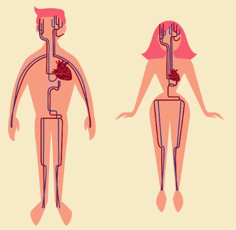

Nuestro cuerpo por dentro
2
Duración: 1 sesión para la investigación de cada sistema
Agrupamiento: gran grupo
En esta actividad vamos a aprender cómo es nuestro cuerpo por dentro.
Para comenzar, vamos a pulsar sobre los iconos que aparecen en la imagen y podemos hacerlo sobre el hombre o sobre la mujer, indistintamente. Al hacerlo, se abrirá un vídeo con las partes del cuerpo.
{"typeGame":"Mapa","instructions":"","showMinimize":false,"showActiveAreas":false,"author":"","url":"resources/cuerpo_humano_dentro.jpg","authorImage":"CREARTIC. Elaborado con Genially","altImage":"Imagen del cuerpo por dentro","itinerary":{"showClue":false,"clueGame":"","percentageClue":40,"showCodeAccess":false,"codeAccess":"","messageCodeAccess":""},"points":[{"id":"p1423436347368","title":"Sistema digestivo","type":1,"url":"","video":"https://www.youtube.com/watch?v=_jbw0FxnaQE","x":0.20259131878557876,"y":0.4224817961165049,"x1":0,"y1":0,"footer":"","author":"","alt":"","iVideo":0,"fVideo":36000,"eText":"","iconType":5,"question":"","question_audio":"","toolTip":"","link":"","map":{"id":"a1423436347368","pts":[{"id":"p622992094288","title":"","type":0,"url":"","video":"","x":0,"y":0,"x1":0,"y1":0,"footer":"","author":"","alt":"","iVideo":0,"fVideo":0,"eText":"","iconType":0,"question":"","question_audio":"","toolTip":"","link":"","map":{"id":"a622992094288","url":"","alt":"","author":"","pts":[]},"slides":[{"id":"s622992094288","title":"","url":"","author":"","alt":"","footer":""}],"activeSlide":0}],"url":"","alt":"","author":"","active":0},"slides":[{"id":"s1423436347368","title":"","url":"","author":"","alt":"","footer":""}],"activeSlide":0,"audio":""},{"id":"p319542147076","title":"Sistema digestivo","type":1,"url":"","video":"https://www.youtube.com/watch?v=_jbw0FxnaQE","x":0.7111302182163188,"y":0.38558859223300973,"x1":0,"y1":0,"footer":"","author":"","alt":"","iVideo":0,"fVideo":36000,"eText":"","iconType":5,"question":"","question_audio":"","toolTip":"","link":"","map":{"id":"a319542147076","pts":[{"id":"p1629632250336","title":"","type":0,"url":"","video":"","x":0,"y":0,"x1":0,"y1":0,"footer":"","author":"","alt":"","iVideo":0,"fVideo":0,"eText":"","iconType":0,"question":"","question_audio":"","toolTip":"","link":"","map":{"id":"a1629632250336","url":"","alt":"","author":"","pts":[]},"slides":[{"id":"s1629632250336","title":"","url":"","author":"","alt":"","footer":""}],"activeSlide":0}],"url":"","alt":"","author":"","active":0},"slides":[{"id":"s1423436347368","title":"","url":"","author":"","alt":"","footer":""}],"activeSlide":0,"audio":""},{"id":"p1461765213203","title":"Sistema respiratorio","type":1,"url":"","video":"https://www.youtube.com/watch?v=Wq_bPoRTn7I","x":0.16084558823529413,"y":0.3118021844660194,"x1":0,"y1":0,"footer":"","author":"","alt":"","iVideo":0,"fVideo":36000,"eText":"","iconType":5,"question":"","question_audio":"","toolTip":"","link":"","map":{"id":"a1461765213203","pts":[{"id":"p1581050062694","title":"","type":0,"url":"","video":"","x":0,"y":0,"x1":0,"y1":0,"footer":"","author":"","alt":"","iVideo":0,"fVideo":0,"eText":"","iconType":0,"question":"","question_audio":"","toolTip":"","link":"","map":{"id":"a1581050062694","url":"","alt":"","author":"","pts":[]},"slides":[{"id":"s1581050062694","title":"","url":"","author":"","alt":"","footer":""}],"activeSlide":0}],"url":"","alt":"","author":"","active":0},"slides":[{"id":"s1461765213203","title":"","url":"","author":"","alt":"","footer":""}],"activeSlide":0,"audio":""},{"id":"p1105671807331","title":"Sistema respiratorio","type":1,"url":"","video":"https://www.youtube.com/watch?v=Wq_bPoRTn7I","x":0.6693844876660342,"y":0.31331917475728155,"x1":0,"y1":0,"footer":"","author":"","alt":"","iVideo":0,"fVideo":36000,"eText":"","iconType":5,"question":"","question_audio":"","toolTip":"","link":"","map":{"id":"a1105671807331","pts":[{"id":"p1547674449040","title":"","type":0,"url":"","video":"","x":0,"y":0,"x1":0,"y1":0,"footer":"","author":"","alt":"","iVideo":0,"fVideo":0,"eText":"","iconType":0,"question":"","question_audio":"","toolTip":"","link":"","map":{"id":"a1547674449040","url":"","alt":"","author":"","pts":[]},"slides":[{"id":"s1547674449040","title":"","url":"","author":"","alt":"","footer":""}],"activeSlide":0}],"url":"","alt":"","author":"","active":0},"slides":[{"id":"s1461765213203","title":"","url":"","author":"","alt":"","footer":""}],"activeSlide":0,"audio":""},{"id":"p1206041887391","title":"Sistema nervioso","type":1,"url":"","video":"https://www.youtube.com/watch?v=lXoLoeSwivI","x":0.2177715844402277,"y":0.10166868932038835,"x1":0,"y1":0,"footer":"","author":"","alt":"","iVideo":0,"fVideo":36000,"eText":"","iconType":5,"question":"","question_audio":"","toolTip":"","link":"","map":{"id":"a1206041887391","pts":[{"id":"p817066454656","title":"","type":0,"url":"","video":"","x":0,"y":0,"x1":0,"y1":0,"footer":"","author":"","alt":"","iVideo":0,"fVideo":0,"eText":"","iconType":0,"question":"","question_audio":"","toolTip":"","link":"","map":{"id":"a817066454656","url":"","alt":"","author":"","pts":[]},"slides":[{"id":"s817066454656","title":"","url":"","author":"","alt":"","footer":""}],"activeSlide":0}],"url":"","alt":"","author":"","active":0},"slides":[{"id":"s1461765213203","title":"","url":"","author":"","alt":"","footer":""}],"activeSlide":0,"audio":""},{"id":"p554708736606","title":"Sistema nervioso","type":1,"url":"","video":"https://www.youtube.com/watch?v=lXoLoeSwivI","x":0.7130277514231499,"y":0.1443871359223301,"x1":0,"y1":0,"footer":"","author":"","alt":"","iVideo":0,"fVideo":36000,"eText":"","iconType":5,"question":"","question_audio":"","toolTip":"","link":"","map":{"id":"a554708736606","pts":[{"id":"p351630667569","title":"","type":0,"url":"","video":"","x":0,"y":0,"x1":0,"y1":0,"footer":"","author":"","alt":"","iVideo":0,"fVideo":0,"eText":"","iconType":0,"question":"","question_audio":"","toolTip":"","link":"","map":{"id":"a351630667569","url":"","alt":"","author":"","pts":[]},"slides":[{"id":"s351630667569","title":"","url":"","author":"","alt":"","footer":""}],"activeSlide":0}],"url":"","alt":"","author":"","active":0},"slides":[{"id":"s1461765213203","title":"","url":"","author":"","alt":"","footer":""}],"activeSlide":0,"audio":""},{"id":"p798210244317","title":"Sistema circulatorio","type":1,"url":"","video":"https://www.youtube.com/watch?v=ZzATGDMNKYw","x":0.2728000474383302,"y":0.3055521844660194,"x1":0,"y1":0,"footer":"","author":"","alt":"","iVideo":0,"fVideo":36000,"eText":"","iconType":7,"question":"","question_audio":"","toolTip":"","link":"","map":{"id":"a798210244317","pts":[{"id":"p485106994475","title":"","type":0,"url":"","video":"","x":0,"y":0,"x1":0,"y1":0,"footer":"","author":"","alt":"","iVideo":0,"fVideo":0,"eText":"","iconType":0,"question":"","question_audio":"","toolTip":"","link":"","map":{"id":"a485106994475","url":"","alt":"","author":"","pts":[]},"slides":[{"id":"s485106994475","title":"","url":"","author":"","alt":"","footer":""}],"activeSlide":0}],"url":"","alt":"","author":"","active":0},"slides":[{"id":"s798210244317","title":"","url":"","author":"","alt":"","footer":""}],"activeSlide":0,"audio":""},{"id":"p1245702051448","title":"Sistema circulatorio","type":1,"url":"","video":"https://www.youtube.com/watch?v=ZzATGDMNKYw","x":0.7395932163187856,"y":0.3230279126213592,"x1":0,"y1":0,"footer":"","author":"","alt":"","iVideo":0,"fVideo":36000,"eText":"","iconType":7,"question":"","question_audio":"","toolTip":"","link":"","map":{"id":"a1245702051448","pts":[{"id":"p1455804466540","title":"","type":0,"url":"","video":"","x":0,"y":0,"x1":0,"y1":0,"footer":"","author":"","alt":"","iVideo":0,"fVideo":0,"eText":"","iconType":0,"question":"","question_audio":"","toolTip":"","link":"","map":{"id":"a1455804466540","url":"","alt":"","author":"","pts":[]},"slides":[{"id":"s1455804466540","title":"","url":"","author":"","alt":"","footer":""}],"activeSlide":0}],"url":"","alt":"","author":"","active":0},"slides":[{"id":"s798210244317","title":"","url":"","author":"","alt":"","footer":""}],"activeSlide":0,"audio":""},{"id":"p739169071933","title":"Sistema locomotor","type":1,"url":"","video":"https://www.youtube.com/watch?v=bGvFYRvDjc4","x":0.2500296489563567,"y":0.6958434466019418,"x1":0,"y1":0,"footer":"","author":"","alt":"","iVideo":0,"fVideo":36000,"eText":"","iconType":0,"question":"","question_audio":"","toolTip":"","link":"","map":{"id":"a739169071933","pts":[{"id":"p412839820928","title":"","type":0,"url":"","video":"","x":0,"y":0,"x1":0,"y1":0,"footer":"","author":"","alt":"","iVideo":0,"fVideo":0,"eText":"","iconType":0,"question":"","question_audio":"","toolTip":"","link":"","map":{"id":"a412839820928","url":"","alt":"","author":"","pts":[]},"slides":[{"id":"s412839820928","title":"","url":"","author":"","alt":"","footer":""}],"activeSlide":0}],"url":"","alt":"","author":"","active":0},"slides":[{"id":"s739169071933","title":"","url":"","author":"","alt":"","footer":""}],"activeSlide":0,"audio":""},{"id":"p892506744402","title":"Sistema locomotor","type":1,"url":"","video":"https://www.youtube.com/watch?v=bGvFYRvDjc4","x":0.7433882827324478,"y":0.6686589805825243,"x1":0,"y1":0,"footer":"","author":"","alt":"","iVideo":0,"fVideo":36000,"eText":"","iconType":0,"question":"","question_audio":"","toolTip":"","link":"","map":{"id":"a892506744402","pts":[{"id":"p860063134320","title":"","type":0,"url":"","video":"","x":0,"y":0,"x1":0,"y1":0,"footer":"","author":"","alt":"","iVideo":0,"fVideo":0,"eText":"","iconType":0,"question":"","question_audio":"","toolTip":"","link":"","map":{"id":"a860063134320","url":"","alt":"","author":"","pts":[]},"slides":[{"id":"s860063134320","title":"","url":"","author":"","alt":"","footer":""}],"activeSlide":0}],"url":"","alt":"","author":"","active":0},"slides":[{"id":"s739169071933","title":"","url":"","author":"","alt":"","footer":""}],"activeSlide":0,"audio":""}],"isScorm":0,"textButtonScorm":"Guardar la puntuación","repeatActivity":false,"textAfter":"","evaluation":0,"selectsGame":[{"typeSelect":0,"numberOptions":4,"quextion":"","options":["","","",""],"solution":"","solutionWord":"","percentageShow":35,"msgError":"","msgHit":""}],"isNavigable":true,"showSolution":true,"timeShowSolution":3,"version":2,"percentajeIdentify":100,"percentajeShowQ":100,"percentajeQuestions":100,"autoShow":false,"optionsNumber":0,"msgs":{"msgSubmit":"Enviar","msgIndicateWord":"Proporcione una palabra o expresión","msgClue":"¡Genial! La pista es:","msgErrors":"Errores","msgHits":"Aciertos","msgScore":"Puntuación","msgMinimize":"Minimizar","msgMaximize":"Maximizar","msgFullScreen":"Pantalla Completa","msgNoImage":"Pregunta sin imágenes","msgSuccesses":"¡Correcto! | ¡Excelente! | ¡Genial! | ¡Muy bien! | ¡Perfecto!","msgFailures":"¡No era eso! | ¡Incorrecto! | ¡No es correcto! | ¡Lo sentimos! | ¡Error!","msgTryAgain":"Necesita al menos un %s% de respuestas correctas para conseguir la información. Vuelva a intentarlo.","msgEndGameScore":"Antes de guardar la puntuación comience la partida.","msgScoreScorm":"La puntuación no se puede guardar porque esta página no forma parte de un paquete SCORM.","msgPoint":"Punto","msgAnswer":"Responder","msgOnlySaveScore":"¡Sólo puede guardar la puntuación una vez!","msgOnlySave":"Sólo puede guardar una vez","msgInformation":"Información","msgYouScore":"Su puntuación","msgOnlySaveAuto":"Su puntuación se guardará después de cada pregunta. Sólo puede jugar una vez.","msgSaveAuto":"Su puntuación se guardará automáticamente después de cada pregunta.","msgSeveralScore":"Puede guardar la puntuación tantas veces como quiera","msgYouLastScore":"La última puntuación guardada es","msgActityComply":"Ya ha realizado esta actividad.","msgPlaySeveralTimes":"Puede realizar esta actividad cuantas veces quiera","msgClose":"Cerrar","msgPoints":"puntos","msgQuestions":"Preguntas","msgAudio":"Audio","msgAccept":"Aceptar","msgYes":"Sí","msgNo":"No","msgShowAreas":"Mostrar áreas activas","msgShowTest":"Mostrar cuestionario","msgGoActivity":"Pulsa aquí para realizar esta actividad","msgSelectAnswers":"Selecciona las opciones correctas y pulsa sobre el botón 'Responder'.","msgCheksOptions":"Marca todas las opciones en el orden adecuado y pulsa sobre el botón 'Responder'.","msgWriteAnswer":"Escribe la palabra o expresión correcta y pulsa en el botón 'Responder'.","msgIdentify":"Identificar","msgSearch":"Buscar","msgClickOn":"Pulsa sobre","msgReviewContents":"Debes repasar el %s% de los contenidos de la actividad antes de completar el cuestionario.","msgScore10":"¡Todo perfecto! ¡Enhorabuena! ¿Deseas repetir esta actividad?","msgScore4":"No has superado esta prueba. Repasa sus contenidos e inténtalo de nuevo. ¿Deseas repetir la actividad?","msgScore6":"¡Estupendo! Has superado la prueba, pero seguro que lo puedes mejorar. ¿Deseas repetir esta actividad?","msgScore8":"¡Casi perfecto! Aún lo puedes hacer mejor. ¿Deseas repetir esta actividad?","msgNotCorrect":"¡No es correcto! Has pulsado sobre","msgNotCorrect1":"¡No es correcto! Has pulsado sobre","msgNotCorrect2":"y la respuesta correcta es","msgNotCorrect3":"¡Prueba otra vez!","msgAllVisited":"¡Genial! Has visitado los puntos necesarios.","msgCompleteTest":"Puedes completar el cuestionario.","msgPlayStart":"Pulse aquí para empezar","msgSubtitles":"Subtítulos","msgSelectSubtitles":"Selecciona un archivo de subtítulos. Formatos válidos:","msgNumQuestions":"Número de preguntas","msgHome":"Inicio","msgReturn":"Volver"}}
Después de verlo, nuestro profe nos entregará una ficha con órganos que tenemos que identificar y pintar y practicaremos lo que hemos aprendido con los robots BeeBot.
Su navegador no es compatible con esta herramienta.